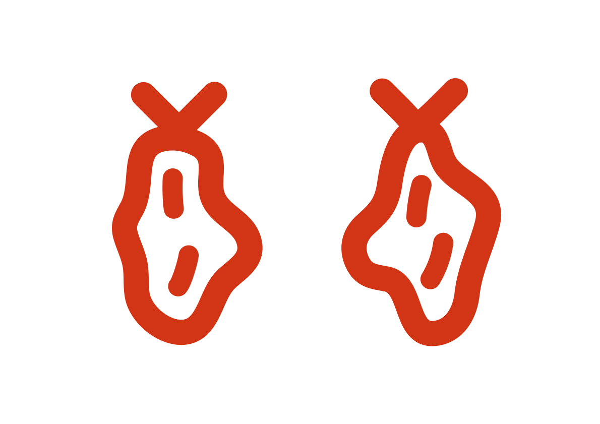

-
 Vypěstováno v Česku
Vypěstováno v Česku
- Lokálnost, čerstvost a sklizeň v plné zralosti.
-
 Bez pesticidů
Bez pesticidů
- Zelenina pěstovaná šetrně k přírodě a našemu zdraví.
- Prémiová chuť
- Jsme milovníci dobrého jídla. Za excelentní chuť ručíme.
Produkty
- Hranáček
- rajčata cherry podlouhlá
- Střapáček
- větší keříkové rajče s charakteristickým střapáčem
-
 Koktejlka
Koktejlka
- koktejlové rajče na větvičce
-  Sušená rajčata
- rajčata cherry, půlená nebo čtvrtky
- Pan Okurka
- středně dlouhá šťavnatá okurka
-
 Okurkáček
Okurkáček
- baby okurka